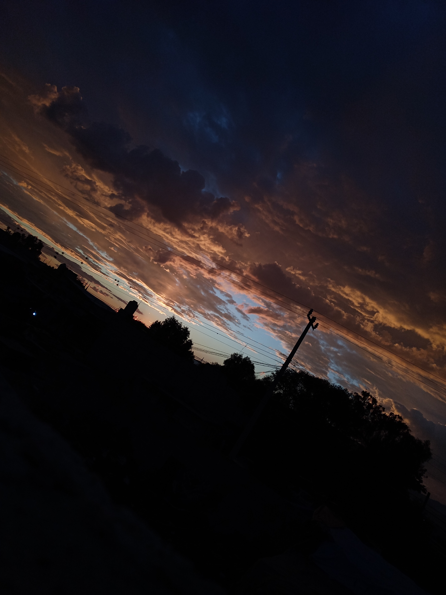
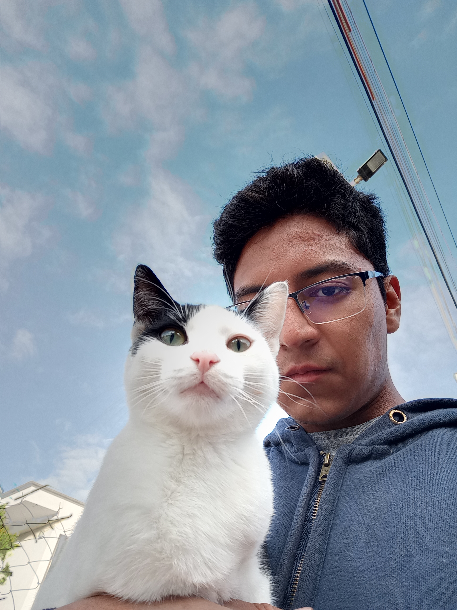

¿Quién soy?
Mi nombre es Dilan Emir Angeles Martinez. Hijo de Jesus Salvador Angeles Ventura y Laura Isabel Martínez Estrada.
Nací el 26 de diciembre de 2005 en la comunidad de Taxhuada, en el municipio de Mixquiahuala de Juarez, en Hidalgo.
Actualmente tengo 17 años, pero en diciembre cumplo mis 18 años, soy amigable, me gusta hacer reir a la gente y cuando algo no me
sale como yo quiero, me desespero y ya no hago nada XD
¿Por qué estudio TIC's?
Realmente aun no tenía conocimiento acerca de esta carrera, mi opcion desde pequeño era estudiar Ingeniería en Sistemas Computacionales,
pero cuando personal del ITSOEH acudio al bachillerato donde estudiaba y nos platicaron sobre la carrera de ITIC's, me cambió la mentalidad,
ya que me dijeron cosas que ni yo sabia y me fascinaron, aunque viendola bien si esta algo complicado JAJAJAJ

¿De dónde vengo?
Como ya lo mencioné, vengo de el municipio de Mixquiahuala de Juarez, ubicado en el estado de Hidalgo, en México. Mixquiahuala es uno de
los 84 municipios que conforman al estado de Hidalgo, en este municipio vive toda mi familia (tanto paterna como materna), y por lo tanto
pasé toda mi niñez rodeado de mis familiares (a excepción de algunos familiares que residen en el extranjero debido a razones personales)


Mis intereses
Mis pasatiempos
- Ver anime.
- Compartir memes en Facebook.
- Tomarle fotos a cualquier cosa (Sobre todo los atardeceres).
- Darle mantenimiento a mis propios equipos.
- Acariciar a cualquier gato que me encuentro en la calle.
- Escuchar música.
- Caminar de la escuela a mi casa.
- Navegar por Google Maps.
- Pasar tiempo con mi novia <3.
- Echar relajo en la escuela.


¡GRACIAS POR VISITAR MI PAGINA!
¿Podrias seguirme en mis redes sociales :3?